Use the tracker to follow every application from start to rebate received.
In each picture, click what's inside the red box.
Click Track New Application at the top of the left menu.
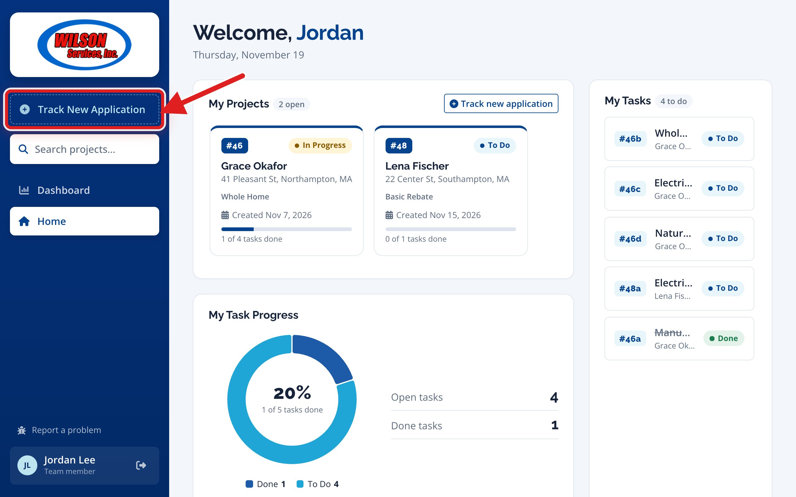
Choose Whole Home, Partial Home or Basic Rebate, then click Next.
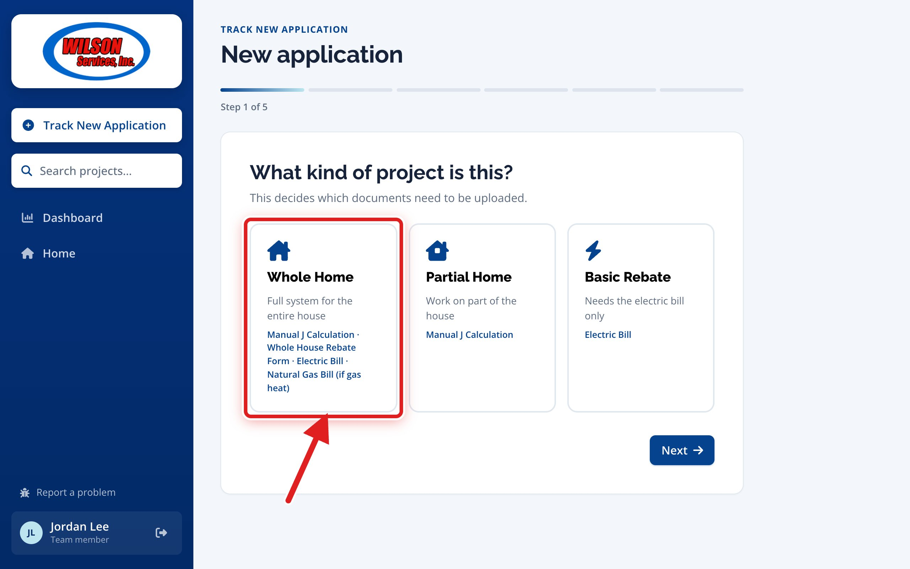
Search Housecall Pro to fill in the customer, or type the name and address. Then answer the questions and click Next through to the end.
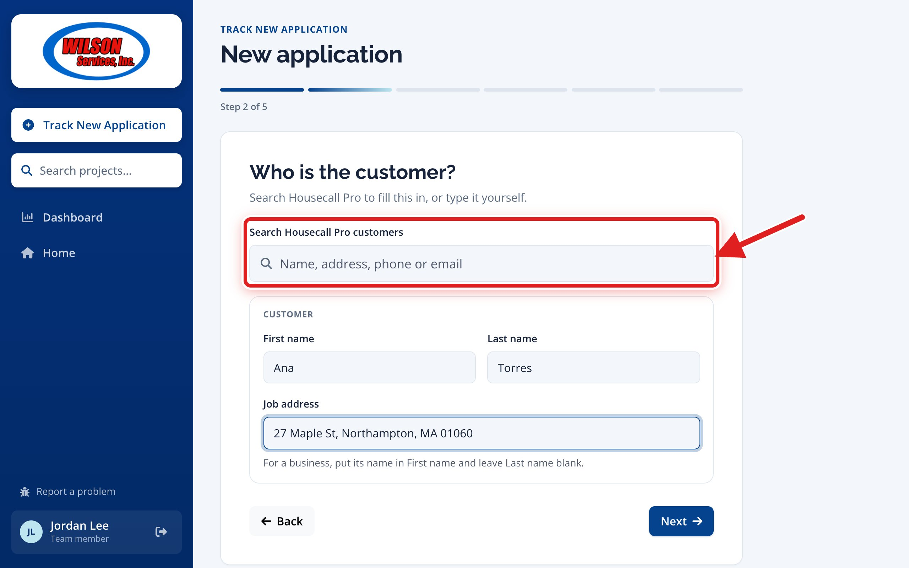
Check the details and click Create project. Each document the application needs becomes a task.
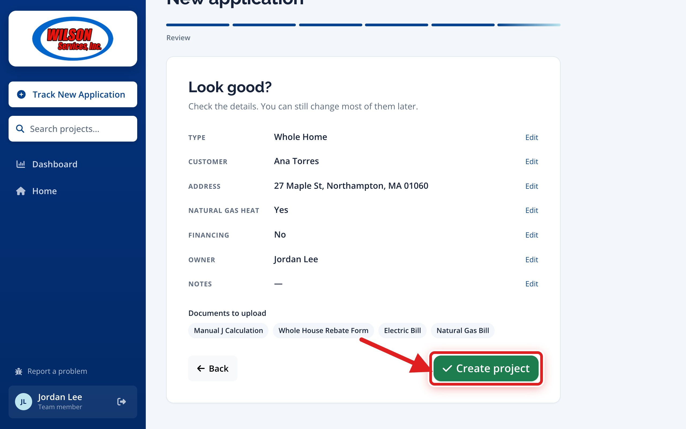
To hand a document to someone else, pick their name under Assigned to. They get an email, and a notice at the top confirms it was sent.
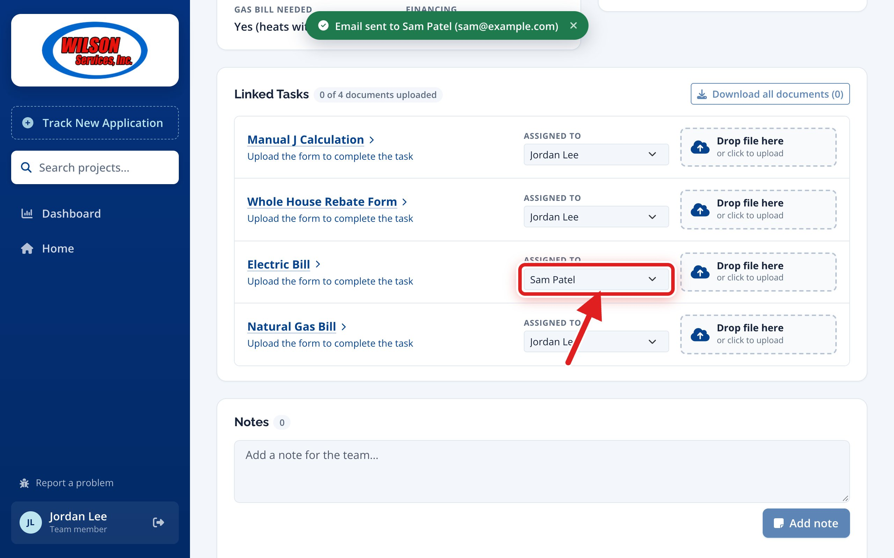
Click a task's name (it's underlined) to open its own page.
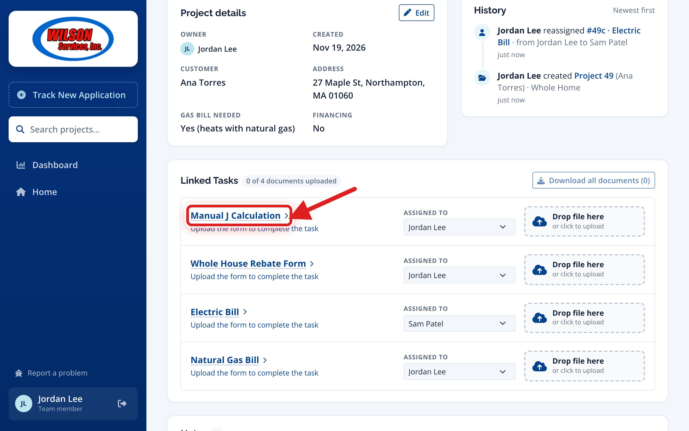
The task page shows who owns it, the customer and address, notes about the task, and its history. You can reassign it or upload its document here too.
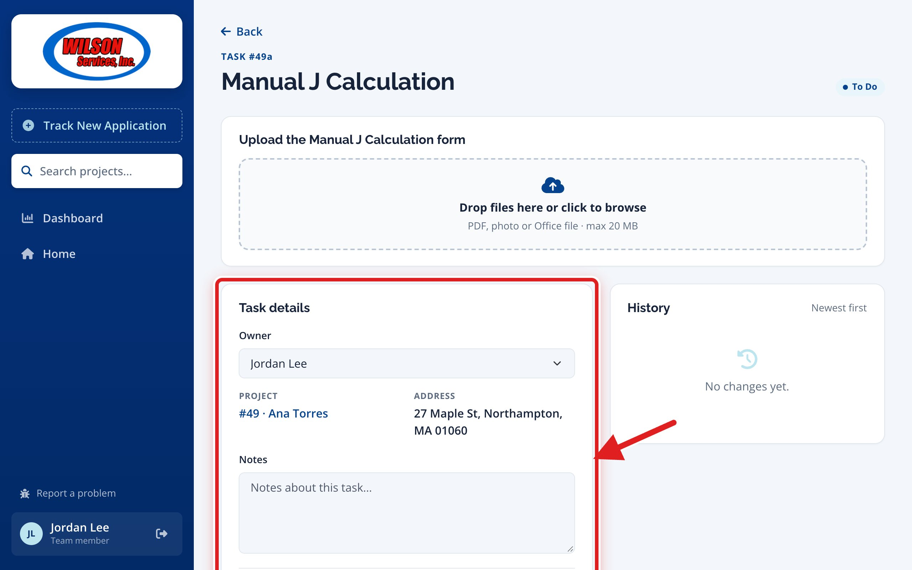
Drag the file onto Drop file here beside the document, or click the box to choose it.
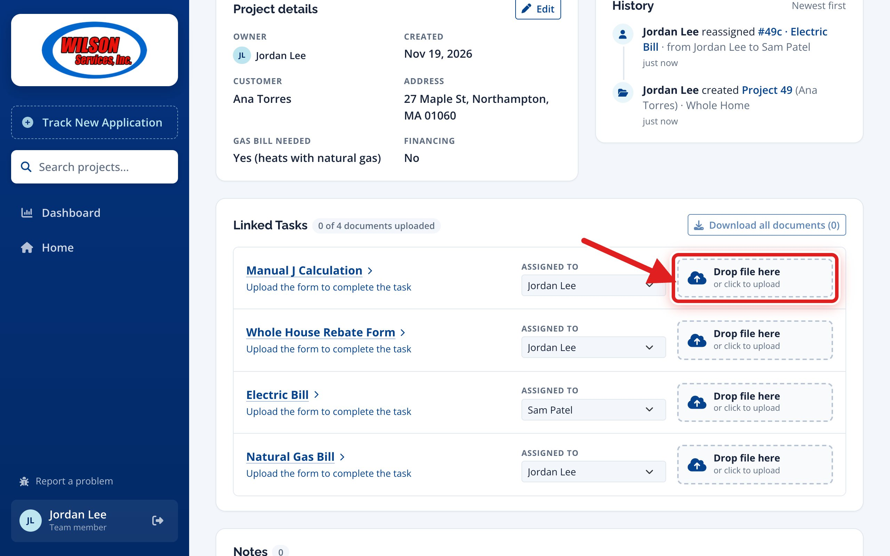
Check the preview is the right document, then click Yes, upload it. This can't be undone.
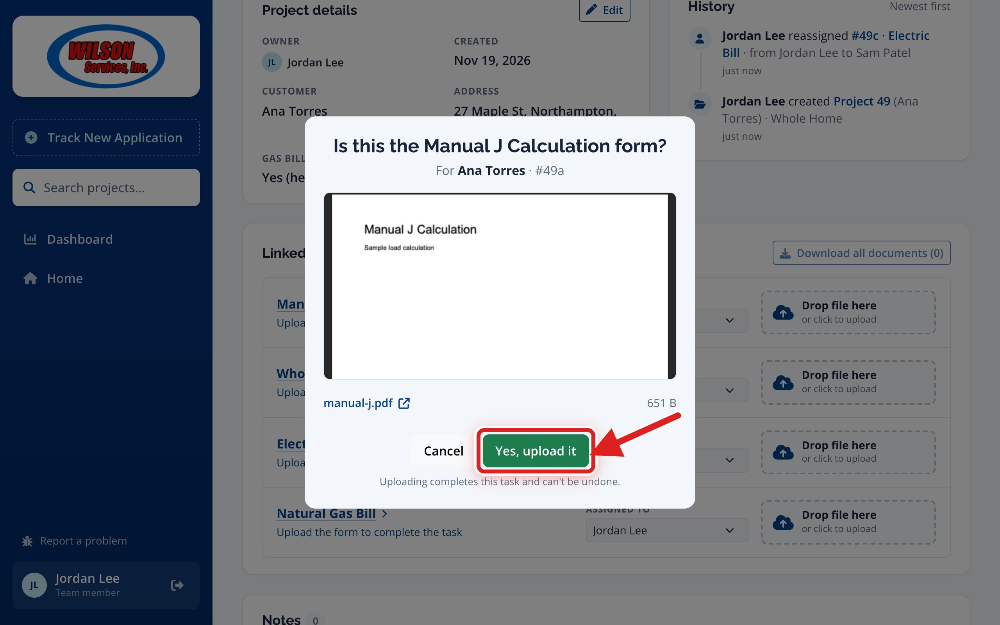
Once every document is in and you've sent it to Mass Save, click Mark as submitted.
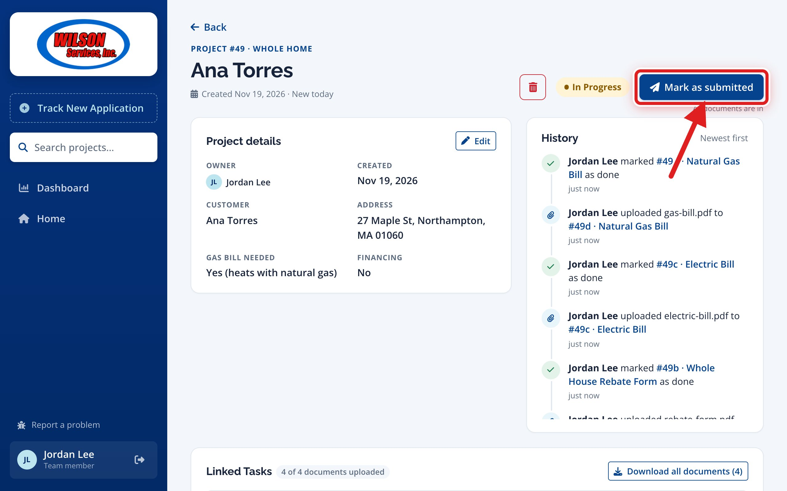
When the rebate arrives, click Rebate Received and enter the number, amount and date. The application is now Done.
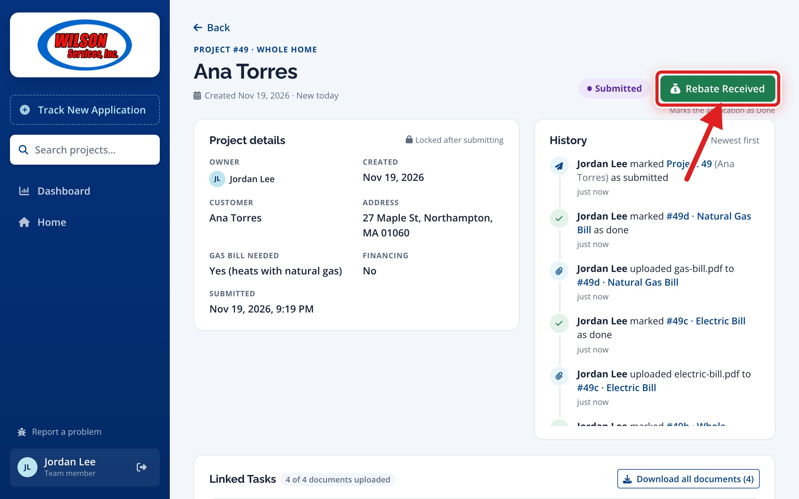
Click Home any time to see everything assigned to you. My Projects shows the applications you own and their stage, My Tasks lists the documents waiting on you, and My Task Progress shows how much you've finished. Click any card or task to open it.
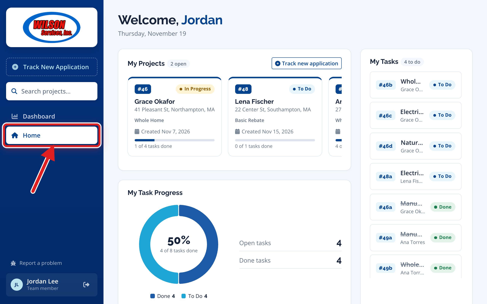
Click Dashboard to see what to work on next, every application's status, and each person's work.
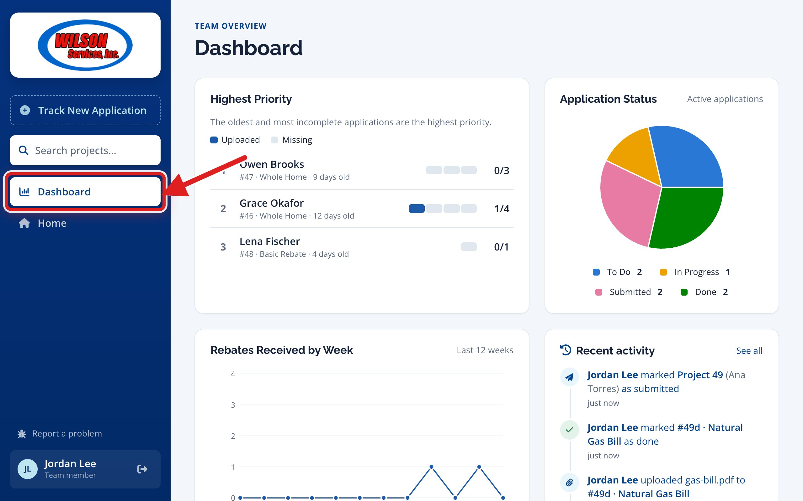
Something not working? Click Report a problem, describe it, add a screenshot if you like, and send.
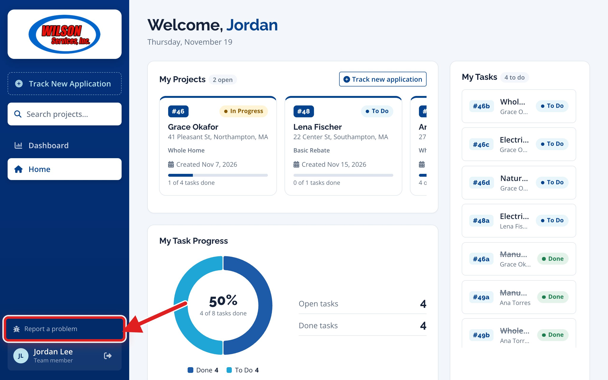